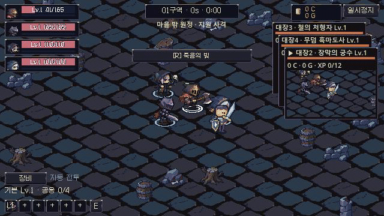

Tracefolio REPORTS & ISSUES
Tracefolio REPORTS & ISSUES 캠프 가디언작업 결과
캠프 가디언작업 결과마을 밖 원정과 수비대 지원 사격 연결
검증 대기성문 방어 전투를 마을 밖 원정으로 바꾸고 수비대의 주기적 지원 화살을 연결했습니다. 기능 QA 39항목 및 자동 전투·정산 시나리오 2개를 통과했습니다.
작업 결과
기획·구현·저장·Godot 기능/자동 전투 QA·실제 렌더 완료. 게임 빌드/소스 푸시/배포 및 체감 난이도 평가는 미실행입니다.
변경 내용
적용 내용
사용자 후속 요청과 마을 수비대가 원정대를 지원한다는 확인을 반영했습니다. 전투의 마을 건물·성벽 출력·성문 충돌·성문 행군·마을 공성 적 주입을 제거하고 4대장 전환/미니 화면/성장/부활을 유지했습니다. 대장은 원정대로 함께 시작하고 다른 대장은 첫 대장 주변에 합류합니다. 지형 청크·적 생성은 원정대 위치를 따릅니다. 마을 원본·시설 강화·저장 데이터는 유지합니다. 지원은 첫18초 이후 적이 있을 때0.9초 예고→실제 화살5발→22~30초 간격이며 아군 피해가 없습니다. 화살당16+배치 레벨합×1.5(레벨합20상한) 피해로 기존 강화 투자를 연결합니다. 죽음의 빚은 기존 구현을 유지하고 QA 재확인했습니다. docs/death-debt.md/AGENTS.md에 확정 방향을 반영했습니다. 외부 라이브러리 원본 변경 없음.
검증
Godot4.7.2 기능 QA: 죽음의 빚21/21, 마을 밖 원정/지원18/18 통과. 원정 위치 QA의 첫 기대조건이 모든 대장을 이동시킨 것으로 잘못 작성돼1회 실패했고, 실제 요구인 각 대장 위치 기준과 대조하도록 수정 후 통과했습니다. 별도 실제 자동 전투24초: stage1,44처치,지원1회,마을 공성 배우0,죽음의 빚 ready(자동 발동 없음),대장 전원 생존. 실제 campaign.finish_run 중복 호출:101C→미상환51C 차감→50C 기록,중복 차감 없음. 실제 GTX970 OpenGL160프레임 렌더와 이미지에서 성벽 제거/원정대/추심자/UI를 확인했습니다. 시연은 추심자 등장 시간을 앞당겼으며 실제12초 연출 길이 검증용이 아닙니다. 
남은 사항
추심자 전용 신규 아트,장기 밸런스/재미/청감,타 언어 UI 미확인. 기존 해골과 프로젝트 효과/음향 재사용. 렌더 종료 시 기존 텍스처RID3개 해제 경고 및 사용자 캐시 생성 경고가 남습니다. 마을 내 기존 시설/자동 방어 시뮬레이션은 보존하고 출정 중에는 중단합니다. 게임 빌드·게임 소스 푸시·게임 배포 미실행. 중앙 보고 푸시/자동 배포/외부 접근은 별도 확인합니다.
작업 시간
- 제안 시간: 최초 기획·구현·QA 약10분(시작2026-11-18 01:01:37 KST),후속 원정 변경 요청에 추가5~10분 안내.
- 실제로 완료된 시간: 죽음의 빚 구현·기능 QA 완료01:08:11 KST(6분34초). 후속 원정 변경·자동 전투/정산 QA 완료2026-11-18 01:15:20 KST,전체 실측13분43초. 보고 등록 시간 별도.
- XERJ: 미사용 — 로컬 소스·데이터·실제 Godot 피해/투사체/정산/렌더로 확인했습니다.